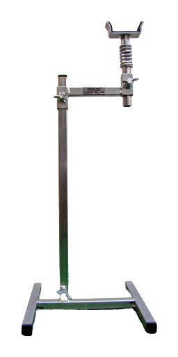

154Carabine précision 10 m
Para-tir · épreuves adaptées
L’épreuve de base de l’école de tir : 40 coups de précision à 10 m. La position s’adapte à l’âge : bloc ressort pour les poussins, support à assistance modulable pour les benjamins, debout sans appui pour les minimes.
Les caractéristiques de l’épreuve
| Numéro de discipline FFTir | 154 |
| Catégories | Poussins, benjamins et minimes (filles et garçons) |
| Type d’arme | Carabine à air comprimé ou CO2, conforme ISSF |
| Position | Poussins : arme posée sur un bloc ressort · Benjamins : support à assistance modulable · Minimes : debout sans appui |
| Cible | Cible carabine 10 m ISSF |
| Distance | 10 m |
| Programme | 40 coups, un plomb par cible |
| Installation | 10 minutes, avec l’aide de l’entraîneur |
| Préparation et essais | 10 minutes, essais illimités |
| Durée du match | 50 min sur cibles électroniques ; 60 min sur cibles papier |
| Comptage | Au dixième de point |
D’après le règlement Écoles de tir 2027 de la FFTir (adopté le 16 mai 2026) et le règlement de gestion sportive 2026-2027. En cas de doute, seul le texte officiel fait foi.
Les commandements
Le déroulement est le même pour les trois catégories ; seule la position change.
| Moment | Commandement | Ce qu’il faut faire |
|---|---|---|
| Avant | Installation | Jusqu’à 10 minutes pour s’installer au poste ; l’entraîneur peut aider. Les supports sont contrôlés par les arbitres. |
| H-10 | « PRÉPARATION ET ESSAIS… COMMENCEZ » | 10 minutes de préparation, essais illimités. |
| H-0:30 | « 30 SECONDES » | Fin des essais dans 30 secondes. |
| H | « STOP » | Fin de la préparation. |
| H | « TIRS DE MATCH… TIREZ » | Début du match : 40 coups, un plomb par cible. |
| Fin | « STOP… DÉCHARGEZ » | On cesse de tirer, on décharge, drapeau de sécurité en place. |
Contrôles et règles
Contrôles
- Le drapeau de sécurité est mis dès que l’arme sort de sa boîte, à chaque sortie du pas de tir et quand le tireur est assis.
- Armes et équipements sont contrôlés ; ce que le règlement ne prévoit pas est interdit.
- Coaching non verbal seulement : l’entraîneur encourage sans parler.
- Avec un support (poussins et benjamins), le pontet de l’arme doit être fermé.
- Poussins : pas de vêtements ni de chaussures de tir ; aucune partie du corps ne touche la table.
- Benjamins : le support est contrôlé (crochet libre sur 10 cm, câble vertical, support non fixé à la table).
Interdit
- Le surclassement : chacun tire dans sa catégorie.
- Les marquages adhésifs au sol (un mètre ou des cartons posés suffisent).
- Retirer une arme du pas de tir sans l’accord d’un arbitre.
- Tout dispositif pour poser l’arme en plus du support (planchette…).
Les incidents les plus courants
| Situation | Ce que prévoit le règlement |
|---|---|
| Égalité au classement | Les règles de barrage de l’ISSF s’appliquent. |
| Petit tireur | Une estrade personnelle de 20 cm au plus est autorisée, sans antidérapant. |
| Doute sur une règle | Ce qui n’est pas prévu par le règlement École de tir suit le règlement ISSF. |
Une position adaptée à chaque âge
Carabine comme pistolet, l’épreuve de précision se tire sur 40 coups, un plomb par cible, après 10 minutes d’installation et 10 minutes de préparation avec essais illimités. Ce qui change avec l’âge, c’est la façon de porter l’arme.

Le pied réglable porte un bras au bout duquel le bloc ressort, en forme de « U », reçoit l’arme. On règle la hauteur pour que le jeune tire debout, bien droit, sans s’appuyer : le ressort amortit et laisse l’arme bouger un peu, pour apprendre à la stabiliser. Aucune partie du corps ne touche la table, et l’arme ne touche pas les côtés du « U ».
Photo : potence à ressort démontable (Girocible).

Un câble passe dans des poulies (trois au plus) : d’un côté un contrepoids, de l’autre un crochet qui soutient l’arme. Le contrepoids porte une partie du poids de l’arme ; en le réduisant au fil des mois, le jeune apprend progressivement à la tenir seul. Le règlement impose que le crochet puisse remonter librement de 10 cm, que le câble reste vertical au moment du tir et que le support ne soit pas fixé à la table.
Photo : support à assistance modulable (Girocible).
Sécurité : avec un support (poussins et benjamins), le pontet de l’arme doit être fermé. À la carabine précision, les points sont comptés au dixième.
Carabine précision en vidéo
Plus de vidéos : les vidéos de l’école de tir et la vidéothèque du site Pistolet ↗.